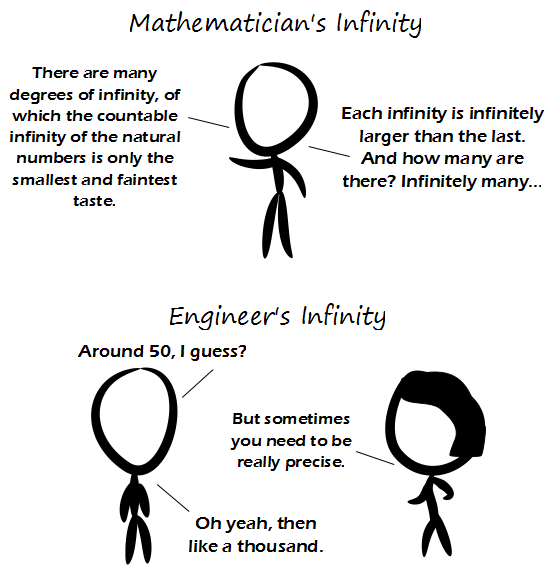

Comic JK 792
When I Feel Like It
⇤
<
?
>
⇥

⇤
<
?
>
⇥
Forum
.
RSS
.
Digg
.
Facebook
.
Reddit
.
Twitter
.
Stumbleupon
Your mother's concept of infinity is how many dorky college boys she's banged in the last week. I've got more infinity between 0 and 1 than engineers will ever comprehend. >So like 80 or so, then? >You mean like the number of 0's between the numbers 0.999 recurring and 1? >> infinitely many more than that... >>I love you, good sir Programmers count "0, 1, infinity". Or at least they should. >I thought it's "true", "false" and "FileNotFound"! >>Argh, I get the reference… This may or may not be bad. >>nah, it's "false", "true", "Null" (or sometimes a "Maybe", but only in ternary) >>>int main(){bool b;cout << b} In my computer it's "true", "false" and 118. Y'all don't know about my IEEE 754-2008 quadruple precision! Infinity is about 10^16384 today :) > I Fully agree. To me, infinity is simply larger than floating point numbers can represent in whatever computational domain you're working with. It works for approximations in many applications. This is not applicable for integer values, as floats actually have a useful representation of infinity, but ints do not. Love the title-text. I had to look this up, so for the benefit of my fellow non-geeks out there: 2147483647 = (2^31)-1, i.e. the maximum value for a 32-bit signed integer in computing. >pssh. What non-geek would ever read this comic? >>The one who posted above you of course. >>>Who would not get this!? >>>>ikr Huh, I believe that YOU ARE ALL WRONG. Infinity is clearly defined by IEEE-754 as 0x7FF0000000000000. >0x7F U > That is +infinity. -infinity is 0xFFF0000000000000. >>Nice >>>No, Infinity is defined by yo mama's weight.